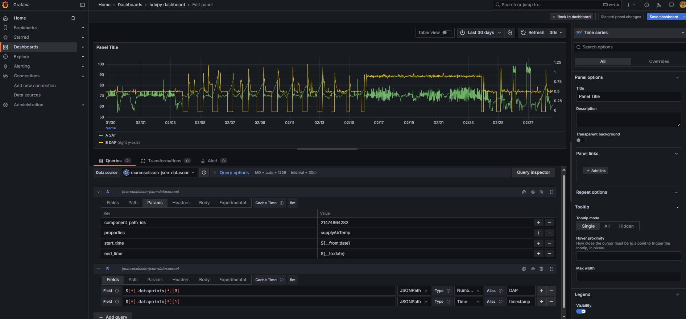

Setting Up BDXpy as a Data Service for Grafana
This guide walks you through setting up BDXpy as a FastAPI data service on a Grafana server and configuring it as a JSON API data source.

1. Install Dependencies
Ensure you have Python 3.12+ installed. Install the necessary dependencies:
pip install fastapi uvicorn pandas requests python-dotenv
2. Set Up Environment Variables
Create a .env file to store your BDX credentials securely:
BDX_URL="https://your-bdx-instance.com"
BDX_USER="your-username"
BDX_PASS="your-password"
3. Implement the FastAPI Service
Create a file bdx_service.py and define the API:
```python
from fastapi import FastAPI, Query, HTTPException, BackgroundTasks, Request
from fastapi.responses import JSONResponse
import pandas as pd
import uvicorn
import os
import logging
import json
from datetime import datetime, timedelta, timezone
from dotenv import load_dotenv
from slowapi import Limiter
from slowapi.util import get_remote_address
from typing import List, Optional
from memory_profiler import profile
# Import BDXpy modules
from bdx.core import BDX
from bdx.auth import UsernameAndPasswordAuthenticator
from bdx.trending import PropertyDescriptor
from bdx.types import TimeFrame, AggregationLevel
# Configure Logging
logger = logging.getLogger(__name__)
log_handler = logging.handlers.RotatingFileHandler("api.log", maxBytes=100*1024*1024, backupCount=5)
logger.setLevel(logging.DEBUG)
log_handler.setFormatter(logging.Formatter("%(asctime)s - %(levelname)s - %(message)s"))
logger.addHandler(log_handler)
def log_event(level, message, extra=None):
log_entry = {
"level": level,
"message": message,
"timestamp": datetime.now(timezone.utc).isoformat()
}
if extra:
try:
json.dumps(extra) # Ensure extra is JSON serializable
log_entry["extra"] = extra
except TypeError:
log_entry["extra"] = str(extra) # Convert non-serializable objects to strings
logger.log(level, json.dumps(log_entry))
# Load environment variables
load_dotenv()
BDX_URL = os.getenv("BDX_URL")
BDX_USER = os.getenv("BDX_USER")
BDX_PASS = os.getenv("BDX_PASS")
# Initialize Rate Limiting
limiter = Limiter(key_func=get_remote_address)
# FastAPI app
app = FastAPI()
# Initialize BDX connection
authenticator = UsernameAndPasswordAuthenticator(BDX_USER, BDX_PASS)
bdx_instance = BDX(BDX_URL, authenticator)
@app.middleware("http")
async def error_middleware(request: Request, call_next):
try:
return await call_next(request)
except Exception as e:
log_event(logging.ERROR, f"Unhandled error: {e}", {"request_path": request.url.path})
return JSONResponse(
status_code=500,
content={"message": "Internal Server Error"}
)
@app.get("/query")
@limiter.limit("20/minute")
async def query_grafana(
request: Request,
background_tasks: BackgroundTasks,
component_path_ids: str = Query(..., title="Comma-separated list of Component Path IDs"),
properties: str = Query("value", title="Comma-separated list of properties"),
start_time: Optional[str] = Query(None, title="Start Time (ISO 8601, default: 24h ago)"),
end_time: Optional[str] = Query(None, title="End Time (ISO 8601, default: now)")
):
log_event(logging.DEBUG, "Raw query parameters", {"query_params": dict(request.query_params)})
try:
component_path_ids_list = list(map(int, component_path_ids.split(",")))
properties_list = properties.split(",")
if not start_time:
start_time = (datetime.now(timezone.utc) - timedelta(hours=24)).isoformat()
if not end_time:
end_time = datetime.now(timezone.utc).isoformat()
log_event(logging.DEBUG, "Parsed query parameters", {
"component_path_ids": component_path_ids_list,
"properties": properties_list,
"start_time": start_time,
"end_time": end_time
})
response = await get_bdxpy_trend_data(bdx_instance, component_path_ids_list, properties_list, start_time, end_time)
return response
except Exception as e:
log_event(logging.ERROR, f"Unexpected error in query processing: {str(e)}")
raise HTTPException(status_code=500, detail="Internal server error")
async def get_bdxpy_trend_data(bdx_instance, component_path_ids: List[int], properties: List[str], start_time: str, end_time: str):
try:
log_event(logging.DEBUG, "Fetching BDXpy data", {
"component_path_ids": component_path_ids,
"properties": properties,
"start_time": start_time,
"end_time": end_time
})
trending = bdx_instance.trending
start_dt = datetime.fromisoformat(start_time).astimezone(timezone.utc)
end_dt = datetime.fromisoformat(end_time).astimezone(timezone.utc)
timeframe = TimeFrame(start=start_dt, end=end_dt)
property_descriptors = [
PropertyDescriptor(componentPathId=comp_id, propertyName=prop)
for comp_id in component_path_ids
for prop in properties
]
trend_data = trending.retrieve_data(properties=property_descriptors, timeframe=timeframe, aggregation_level=AggregationLevel.POINT)
df = trend_data.dataframe
log_event(logging.DEBUG, "Received DataFrame", {"df_shape": df.shape, "df_columns": list(df.columns)})
if df.empty:
log_event(logging.WARNING, "No data returned from BDXpy.")
return {"message": "No data available"}
if 'time' in df.columns:
df['time'] = pd.to_datetime(df['time'], utc=True) # Ensure 'time' column is datetime
df.set_index('time', inplace=True) # Set 'time' as the index
print(df)
response = [
{
"target": column.split('_')[-1], # Remove component ID prefix to match Grafana target names
"datapoints": [
[value, int(pd.Timestamp(timestamp).timestamp() * 1000)]
for timestamp, value in df[column].items() if pd.notna(timestamp) and not pd.isnull(value)
]
}
for column in df.columns if column != 'time'
]
return response
except Exception as e:
log_event(logging.ERROR, f"Error fetching BDXpy data: {e}")
raise HTTPException(status_code=500, detail="Internal Server Error")
@app.get("/")
async def root():
return {"message": "BDXpy API for Grafana"}
if __name__ == "__main__":
uvicorn.run(app, host="127.0.0.1", port=8000)
```
4. Run the API Service
Start the service:
python
python bdx_service.py
Your FastAPI service is now running on port 8000.
Note: if this is a important process you will want to create additional monitoring and error checking and maybe expand service restart scenarios to ensure high uptime
5. Configure Grafana
-
Install JSON API
-
Add a New Data Source in Grafana:
- Navigate to Configuration → Data Sources → Add Data Source.
- Select "JSON API".
- Set:
- URL:
http://localhost:8000 - Method:
GET
- URL:
-
Click Save & Test.
-
Create a Panel:
- Go to Dashboards → Create → New Panel.
- Choose the JSON API data source.
- Set the Query Path to
/query. -
Add Query Parameters:
component_path_ids=21474864282properties=supplyAirTemp,ductStaticPressurestart_time=${__from:date}end_time=${__to:date}
-
Format Response in Grafana:
- Use JSONPath Queries to extract data:
[ { "name": "value", "jsonPath": "$[*].datapoints[*][0]", "type": "number" }, { "name": "timestamp", "jsonPath": "$[*].datapoints[*][1]", "type": "time" }, { "name": "metric", "jsonPath": "$[*].target", "type": "string" } ]
6. Verify Data in Grafana
- Ensure your panel correctly visualizes each series separately.
- If a boolean point (e.g.,
supplyFanStatus) is coming back null, check: - The property name in BDX.
- The data type (it may need conversion to
1/0instead oftrue/false).
7. (Optional) Enable Secondary Y-Axis in Grafana
To plot multiple metrics with different scales:
- Go to Panel Settings → Axes.
- Under Y-Axis, set:
- Y-Axis 1 for supplyAirTemp
- Y-Axis 2 for ductStaticPressure
8. (Optional) Add Background Shading for Boolean Points
To visualize a Boolean (True/False) metric:
- Use Field Overrides:
- Set a Threshold (e.g., 1 = ON / 0 = OFF).
- Change background color dynamically based on status.